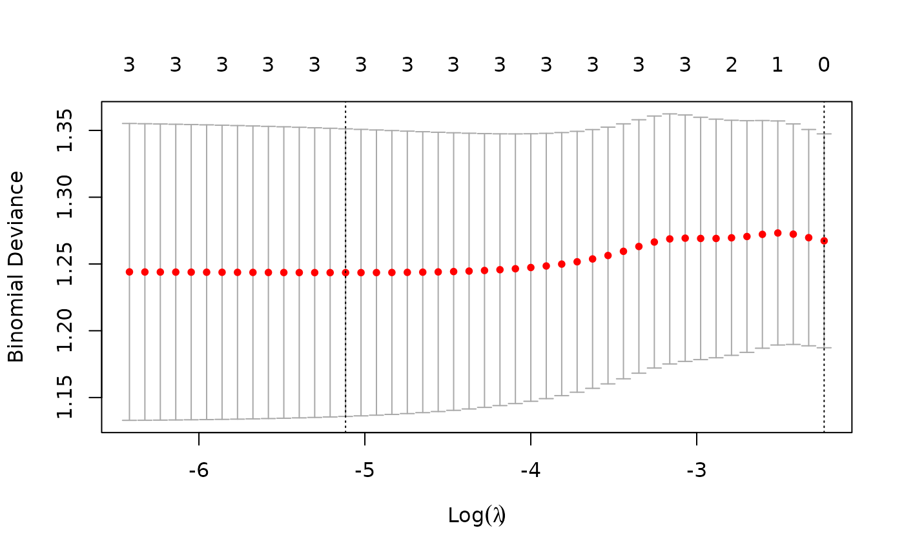

Plot Odds Ratio
plot_OR.RdThe function accepts input in the form of a generalized linear model (GLM) or a glmnet object, specifically those employing binomial families, and proceeds to generate a suite of visualizations illustrating alterations in Odds Ratios for given predictor variable corresponding to changes between minimum, first quartile (Q1), median (Q2), third quartile (Q3), and maximum values observed in empirical data. These plots offer a graphical depiction of the influence exerted by individual predictors on the odds of the outcome, facilitating a clear interpretation of their respective significance. Such a tool aids in comprehending the interplay between predictors and outcomes within the logistic regression framework, particularly within the context of empirical data distributions.
Usage
plot_OR(
func,
data,
var_name,
color_filling = grey.colors(4, start = 0.1, end = 0.9),
verbose = FALSE
)Arguments
- func
A fitted model object with binomial family, expected to be one of the following classes:
glm lm: Generalized Linear Models.lognet glmnet: Regularized Logistic Models.
- data
Input data frame that was used to fit the input function (
data.frameobject).- var_name
Name of a variable to plot graphs for (
stringobject).- color_filling
Vector with color numbers to plot in bar plot (
vectorobject). Default isgrey.colors(4, start=0.1, end=0.9).- verbose
TRUEto print additional information such as Warnings,FALSEotherwise (boolobject). Default isFALSE.
Value
A list with the following components:
$BarPlot: Aggplotobject that visualizes dependency of a change in Variable values on function's Odds Ratio values.$BoxPlot: Aggplotobject that visualizes distribution of data points for a given variable.$SidebySide: Aggarrangeobject containing both visualizations side-by-side.
Examples
### Prepare Sample Binomial Data
set.seed(42)
obs_num = 100
x1 = rnorm(obs_num)
x2 = rnorm(obs_num)
x3 = rnorm(obs_num)
prob = plogis(1 + 0.3 * x1 + 0.2 * x2 + 0.1 * x3)
y = rbinom(obs_num, 1, prob)
data = data.frame(x1, x2, x3, y)
### GLM Object Exmaple
# Get GLM model
glm_object = glm(y ~ x1 + x2 + x3,
family=binomial(link="logit"),
data=data)
summary(glm_object)
#>
#> Call:
#> glm(formula = y ~ x1 + x2 + x3, family = binomial(link = "logit"),
#> data = data)
#>
#> Coefficients:
#> Estimate Std. Error z value Pr(>|z|)
#> (Intercept) 0.9302 0.2395 3.884 0.000103 ***
#> x1 0.3958 0.2324 1.703 0.088595 .
#> x2 0.5801 0.2723 2.130 0.033143 *
#> x3 0.3121 0.2421 1.289 0.197346
#> ---
#> Signif. codes: 0 ‘***’ 0.001 ‘**’ 0.01 ‘*’ 0.05 ‘.’ 0.1 ‘ ’ 1
#>
#> (Dispersion parameter for binomial family taken to be 1)
#>
#> Null deviance: 123.82 on 99 degrees of freedom
#> Residual deviance: 113.97 on 96 degrees of freedom
#> AIC: 121.97
#>
#> Number of Fisher Scoring iterations: 4
#>
# Plot Odds Ratio graphs
plot_OR(glm_object, data, var_name="x2")$"SidebySide"

### GLMNET Object Example
require(glmnet)
#> Loading required package: glmnet
#> Loading required package: Matrix
#> Loaded glmnet 4.1-8
# Get Lasso model
y_lasso = data$y
x_lasso = model.matrix(as.formula(paste("~",
paste(colnames(subset(data,
select=-c(y))),
collapse = "+"),
sep = "")),
data=data)
x_lasso = x_lasso[,-1]
ndim_lasso = dim(x_lasso)[1]
# Select the 1se lambda from cross validation
cv_model_lasso = cv.glmnet(x_lasso, y_lasso, family="binomial", alpha=1)
lambda_lasso = cv_model_lasso$lambda.1se
plot(cv_model_lasso)

# Get a model with the specified lambda
model_lasso = glmnet(x_lasso, y_lasso, family="binomial",
alpha=0.5, lambda=lambda_lasso)
summary(model_lasso)
#> Length Class Mode
#> a0 1 -none- numeric
#> beta 3 dgCMatrix S4
#> df 1 -none- numeric
#> dim 2 -none- numeric
#> lambda 1 -none- numeric
#> dev.ratio 1 -none- numeric
#> nulldev 1 -none- numeric
#> npasses 1 -none- numeric
#> jerr 1 -none- numeric
#> offset 1 -none- logical
#> classnames 2 -none- character
#> call 6 -none- call
#> nobs 1 -none- numeric
# Plot Odds Ratio graphs
plot_OR(model_lasso, data, var_name="x2")$"SidebySide"
